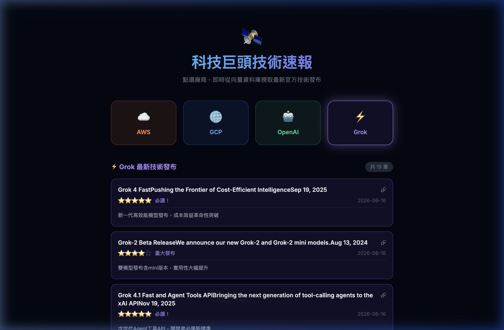
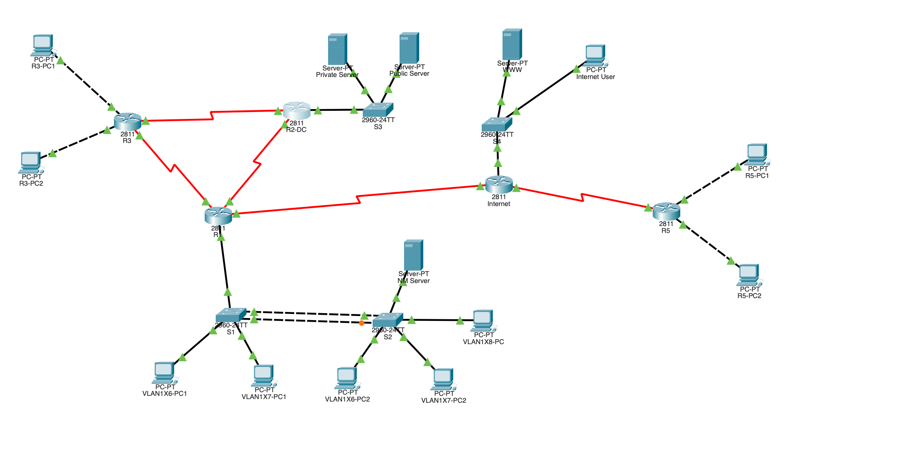
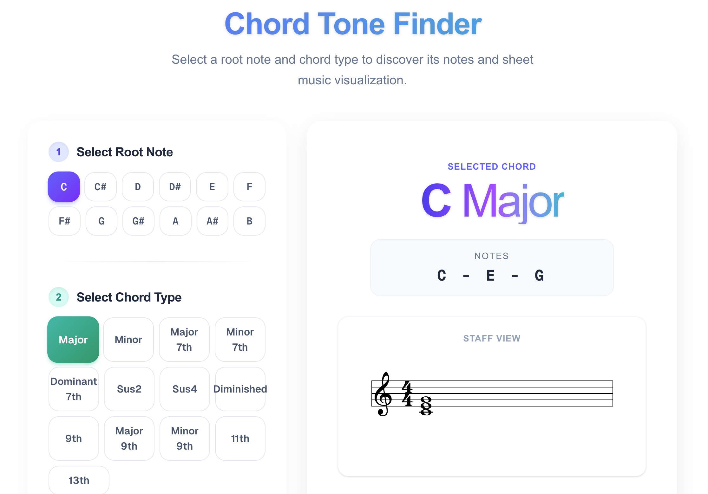

林昱諳 Hank Lin
網路工程師 / Network Engineer
你好，我是昱諳，正積極轉職網路工程師，透過系統性培訓與獨立專案實作，建立 Linux 系統管理、Cisco 設備配置、VMware 虛擬化與 AWS 多組件架構的實務能力。期盼投入雲端與網路工程團隊，貢獻於高可用基礎架構的建置與維運。
About Me
轉職動機：跳出舒適圈，看好網路產業的無限可能
過去我是一名專業的樂器產業技術人員。雖然熱愛音樂，但深感傳統音樂產業的發展空間與天花板相對受限；與此同時，AI時代大爆發讓我看到了網路資訊產業的蓬勃發展與不可逆的數位趨勢。在接觸到程式設計與系統架構後，我被網路運作、資料流動與自動化服務的邏輯深深吸引，這份成就感讓我下定決心破釜沉舟，全面轉入網路與雲端工程領域。
技術養成：系統化培訓與 AWS 雲端專案實作
為了快速紮實基本功，我參與了緯育的雲端網路工程師密集培訓。系統性地掌握了 TCP/IP、HTTP、DNS 等核心網路協定、Cisco 網路設備操作，以及 Linux 系統管理與 CLI 指令，雲端架構的概念與AWS\GCP的操作。
在培訓期間，我獨立建置了一套基於 AWS 架構的科技新聞搜集平台專案，實際演練「前後端分離」與「微服務拆分」的理念。我將系統拆分為前端、後端與爬蟲三個獨立模組：
- 雲端架構部署： 將服務部署於 AWS EC2進行網段分離，配置 ALB（應用程式負載平衡器）進行流量分發，確保高可用性。
- 系統監控與資料流： 透過 CloudWatch 建立系統監控與日誌審查機制，並串連Amazon Bedrock進行日誌輔助分析。
- 容器化技術： 導入 Docker 進行容器化封裝，確保開發與部署環境的一致性。
高效協作：導入 AI 工具的現代化工程思維
在開發過程中，我並非盲目依賴 AI 給出答案，而是建立了一套「AI 輔助開發工作流」來強化解決問題的效率：
- 架構構思： 先自主設計系統雛形與資料流向。
- 交叉驗證： 運用多個不同的 LLM（大型語言模型）針對架構的可行性、安全性與潛在瓶頸進行交叉驗證與流程優化。
- 精準控制： 透過不斷調整與優化 Prompt，提高 AI IDE（如 Antigravity / Cursor）在生成程式碼與進行系統除錯時的「可控性」與「精準度」。 這種與 AI 深度協作的經驗，培養了我快速查閱文件、新技術導入與敏捷修正 Bug 的工程思維。
未來展望：持續精進技術與考取國際證照
對於未來，我給自己設定了清晰的技術成長藍圖。入職後，我期望能將所學落地，協助團隊進行系統開發、自動化部署與網路運運維。
為了驗證並深化自己的專業，我已規劃好短中期的證照考取計畫，預計在一年內根據工作需求優先挑戰取得 AWS Certified Solutions Architect – Associate 或 Cisco CCNA 等網路與雲端國際證照。我有信心能將過去在音樂產業培養的細膩專注力與抗壓性，轉化為在技術領域持續迭代的動力，成為團隊中高效且可靠的即戰力。
Skills & Expertise
網路系統配置 (Cisco)
- Switch：TCP/IP、Vlan、Trunking 設定
- Router：Static Route、OSPF動態路由設定
- ACL、NAT、VPN 配置
雲端與 DevOps
- AWS：VPC, EC2, ALB, ECS, CloudWatch, Bedrock
- GCP 基礎使用
- Docker 容器化部署
- VMware vSphere 虛擬化
- Git/Github 專案協作
程式開發
- 前端：HTML5, CSS3, JS(ES6+)
- 框架：React.js, Next.js (App Router)
- 後端：Node.js, RESTful API, AJAX
- 樣式：Bootstrap5, Tailwind CSS
系統操作
- Linux CLI 操作與基礎系統管理
- 基礎協定理解：TCP/IP, DNS
Experience
資安與雲端架構工程師養成班
緯育股份有限公司附設中壢職業訓練中心
2026/3 ~ 2026/7完整學習網路概論、Linux系統操作、Cisco網路設備、雲端架構概念與AWS/GCP操作概念。完成AWS 雲端多組件系統專案-AI科技新聞Agent。
前端工程師培訓班學員
資展國際股份有限公司
2024/10 ~ 2025/3完成共540小時的完整前端工程師培訓課程，學習完整前端開發知識以及全端開發的概論，完成團體專案-露營網站設計與開發。
樂器銷售與技術服務
高雄真善美樂器行
2020/7 ~ 2024/4- 提供樂器產品技術諮詢與售後服務
- 分析客戶需求並提供解決方案
- 執行設備維修、調整與保養
- 協助門市銷售流程優化
樂器教學
自由接案
2018/9 ~ 2022/9獨立規劃教學課程，培養系統化思考與溝通表達能力。
Project Portfolio

AWS 雲端多組件系統專案-AI科技新聞Agent
2026/5設計並部署前後端分離架構，系統拆分為前端、後端 API、爬蟲三個獨立模組容器化無狀態部署，整合AI進行分析並透過MCP Server智慧查詢。

Cisco 企業網路設定Lab
2026/5於 Cisco Packet Tracer 建置完整企業網路環境，完成 VLSM、VLAN、OSPF 等 Layer2/Layer3 網路配置，實作企業級網路安全與遠端管理機制。
資展國際期末專題-露營電商網站
2024/12與小組合作完成網站，負責商品頁面與 API 串接。開發商品、購物車、訂單與評論系統，並整合第三方金流 (LinePay/ECPay) 及物流 API，完成電商閉環。

和弦查詢小工具
Ongoing結合過往音樂教學經驗，開發互動式音樂視覺化工具，幫助使用者快速查詢與學習和弦組成。